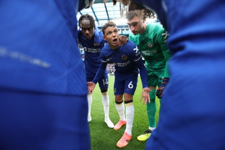

A nd then there was one. Nobody expected a Brazilian club to reach the Club World Cup semi-finals, and if any team was going to make a deep run in the tournament, it was not Fluminense. After winning the Copa Libertadores in 2023, they narrowly avoided relegation last year and have gone through four managers in less than two years.
Thankfully for them, they are now coached by the charismatic Renato Gaúcho, who told us earlier in the tournament: “It’s no use having a team of 500 million reais, because football is decided on the field.” Throughout the tournament he has encouraged Brazilians to take pride in what their teams have achieved, despite being written off due to the wealth of the European sides.
He has also told Fluminense fans to be loud and proud as they celebrate going further in the tournament than their Rio rivals Flamengo and Botafogo, and São Paulo giants Palmeiras. “I ask the fans to wear the Fluminense shirt all over Brazil. Going to the beach, walking the dog, heading to the mall. Wherever you go, I ask Fluminense fans to wear the club’s shirt. Everyone should be very proud of what this group is doing here,” he said after their 2-1 win against Al-Hilal in the quarter-finals .
Renato, a Brazilian football legend who enjoyed something akin to rockstar celebrity status in the 1980s and 1990s, has not always been respected as a manager given his notorious love of the night. Globoesporte journalist Carlos Eduardo Mansur explains that his reputation during his playing days left many people “doubting if he could be a manager with authority because he had fame as someone who liked the good life”.
Despite tasting some success by taking Fluminense to the Copa Libertadores final in 2008, he looked as though he might end up being what is known in Brazil as a “manager of the market” – one who continually changes clubs and rides the country’s never-ending managerial merry-go-round “because no one thought he actually took his profession seriously and would study football”.
When Brazil were dismantled 7-1 by Germany at the World Cup in 2014, the Brazilian football association set up courses for its coaches. Renato mocked the idea of studying, preferring to play foot-volley and indulging in his love of hot sand and cold beer on the beach. “Those who need to learn have to study; those who don’t can take a holiday on the beach no problem,” he quipped. His nonchalance did not do much for his reputation. “There was a desire in Brazil for better training for coaches, especially in the crisis that arose after the World Cup,” says Mansur.
Thiago Silva directs proceedings against Al-Hilal.Photograph: Heuler Andrey/SPP/Shutterstock
Though Renato won the Copa Libertadores with Grêmio in 2017, he bounced from one job to the next without winning many trophies. Somewhere along the line, though, he seems to have changed. “Those who live alongside Renato today say he watches football compulsively, very dedicatedly – that he is super interested,” says Mansur.
His dedication has even annoyed his family. He’s said to have angered his daughter by turning down a dinner invitation in Miami after Fluminense drew with Mamelodi Sundowns and booked their place in the knockout stages. Renato gave his players free time to spend with their families, but he opted to stay in and analyse possible last-16 opponents instead. “They think I don’t study, but what I understand most is tactics,” he said after his team’s landmark win against Inter in the last 16.
Renato’s teams have always enjoyed the attacking side of the game but the surprise at this tournament is just how well they have coped defensively. “He was never one to lock many players into a system,” says Mansur. “He gave a lot of freedom to the forwards, to the most technical and skilful players. The Grêmio team that won the Libertadores had a lot in this aspect, but defensively it lacked a bit of structure. In this tournament, though, Fluminense are adapting against strong opponents and have been defensively very solid. From a tactical point of view, this is the most surprising aspect of the campaign.”
Two players are key to this improvement: their 44-year-old goalkeeper Fábio and 40-year-old defender Thiago Silva, who have limited their opponents to just four goals in five games at the tournament. Silva has shown his leadership abilities throughout. The centre-back took charge during a cooling break against Inter, giving tactical instructions and adapting the team’s formation, helping them to win the game 2-0. Renato’s critics say he showed a lack of authority and ideas by allowing a player to take over, but others have praised him for demonstrating his man-management skills – as a former player himself, he understands when to let his leaders talk.
Renato can be compared to Brazil boss Carlo Ancelotti for this approach. “He has a reputation of being a great locker-room leader, a players’ manager,” says Mansur. “He will go to a press conference and criticise his players, saying they lacked attention and commitment, yet there has never been any news of him losing control of the locker room. This is a very interesting trait of his career; he has a lot of leadership.”
Letting Silva talk was definitely the smart move. The defender displayed impressive, seasoned knowledge of the game, which led to Fluminense’s second goal. Silva has also gone viral for an emotional, rousing team talk he delivered before the game against Inter. He tells the story of his stepfather dying while he was in France playing for PSG. He now has to live with the regret of not visiting him in hospital – and he does not want his teammates to look back at their opportunity in front of them with regrets of their own.
Thiago Silva rouses his teammates with his already legendary speech.
“I didn’t go to see him in hospital because I thought he was going to come out,” Thiago tells his teammates almost in tears. “Don’t hold back out there. Do it now. Do what we can do, right now. Don’t put it off, because there’s no time. Enjoy the moment. Joyfully but responsibly.”
Having won trophies in Italy, France and England, Silva is among the best centre-backs of his generation. He will be 41 in September but Brazilians are coming around to the idea that he could be at heart of their defence under Ancelotti. “He’s been a huge leader for Fluminense. Ignácio and Freytes, who play alongside him in a back three, have improved their performances tremendously. Fluminense had much better defensive numbers in the Brazilian league after he returned to Brazil.
“He has shown a lot of leadership, but there have been some physical issues and injuries and that would be a concern in a tournament as demanding as the World Cup, with possibly seven games in a month if the team goes all the way. But the debate is back on in Brazil. He is performing at a very high level; he is a great leader; he is technically very good; and he imposes himself in duels against high-level attackers who are much younger than him.
Thiago Silva rouses his teammates during his time at Chelsea.Photograph: Chris Lee/Chelsea FC/Getty Images
Renato is leading the campaign for Silva’s return to the national team. “I never tire of seeing Thiago Silva play,” says his manager. “He is a leader and coach on the field. It is beautiful to see him play, to see him lead the team inside the four lines. It’s a pleasure to work with him. He’s helped us a lot because of his leadership and, in my humble opinion, he’s still a Brazilian national team player.”
The semi-final against Chelsea will be special for Silva. He enjoyed four successful seasons at Stamford Bridge, especially considering his advanced years in such a demanding league, and he won the Champions League – a trophy that had eluded him many times at PSG. He also won the Club World Cup, beating Palmeiras in the final in 2021, although winning the expanded tournament with Fluminense – the club where he started his youth career at the age of 14 – would be an achievement on a different level. “One more! There are two left. It’s not over,” he told Renato as they hugged on the pitch after seeing off Al-Hilal.
Once more – as was the case against Dortmund, Inter and perhaps even Al-Hilal, Manchester City’s conquerors – Fluminense go into their next game as underdogs. “If you look at it on paper, Chelsea have invested more money and have more individual stars. But Fluminense have things that can take them through,” says Mansur. “They have a great goalkeeper in great form; they’ve found a way to defend and make the team solid when under pressure; and they have Jhon Arias up front who is one of the candidates for best player of the tournament. Sometimes, in knockout tournaments, that’s enough, so there’s no doubt that Fluminense can continue, but I don’t think they’re the favourites.”
This is an article by Tom Sanderson